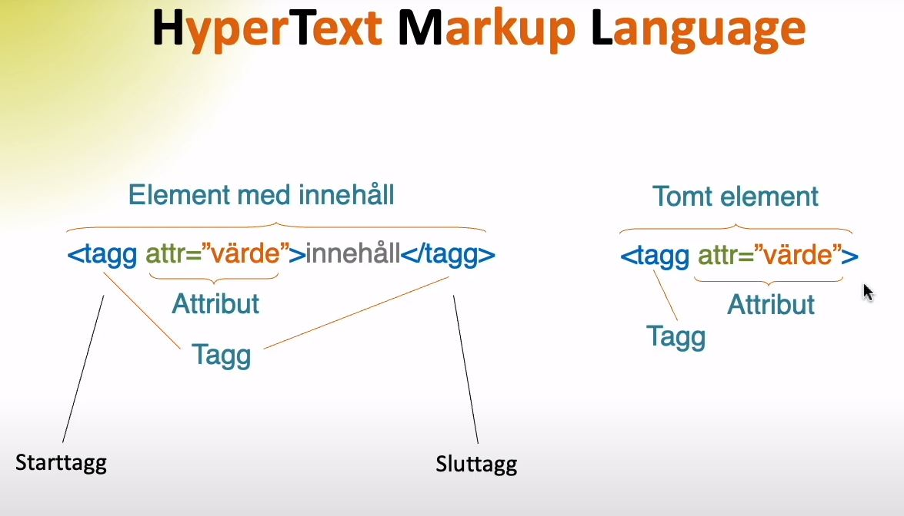
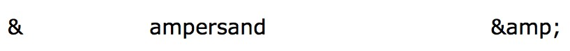

Beskriv vad element, tagg och attribut är.
Ett element är allt som innefattas mellan start och sluttag. Taggen är det som bestämer vad elemtet ska representera, det kan vara t.ex. en rubrik eller ett textstycke. Inom elementen kan det finnas attibuter som tillägger ytterligare information till taggen. Det kan vara tillexempel en bild eller en länk. Attibuter har ofta ett värde skrivet efter som specificerar attributen ytterligare.
Vad är en entitet? Lägg även in ett exempel på en entitet i din HTML-kod.
En entitet är ett sätt att skriva specialtecken. Det inleds med &, följt av ett antal bokstäver och asvlutas sedan med ett semikolon. Om du till exempel vill skriva ett & tecken i din kod är det bättre att använda entiteten för det (Se bild nedan) för att webbläsaren inte ska tro att du försöker skriva ett annat specialtecken.
Vad är skillnaden mellan ett block-element och ett inline-element?
Ett block-element är ett eget stycke som h1 och p. Det kan också innefatta en grupp med block med hjälp av taggar som t.ex. div. Medan ett inline-element är taggar inom block-elementet såsom (radbryt) br eller b (bold) som får texten att visas i fet stil. Ett inline-element kan förekomma inom ett block-element men inte tvärtom.